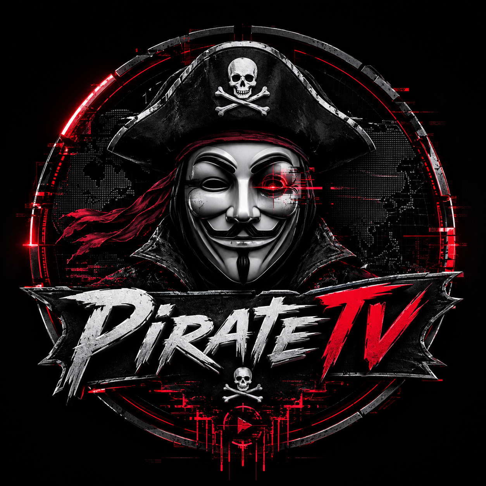

INÍCIO
CANAIS
INÍCIO
/
CANAIS
/
BX1 Bélgica
Variedades
BX1 Bélgica ao vivo
Variedades
BX1 Bélgica - Player (HD)
AO VIVO
A carregar player...
EXPLORAR OUTROS CANAIS
📋 Copiar URL do stream (VLC)
CANAIS RELACIONADOS
Circle
Variedades
Estrella TV
Variedades
RCN Más
Variedades
This Old House
Variedades
Estrella TV
Variedades
RCN Más
Variedades
Assim é Portugal
Variedades
Astral TV
Variedades
 Estrella TV
Estrella TV RCN Más
RCN Más Assim é Portugal
Assim é Portugal Astral TV
Astral TV